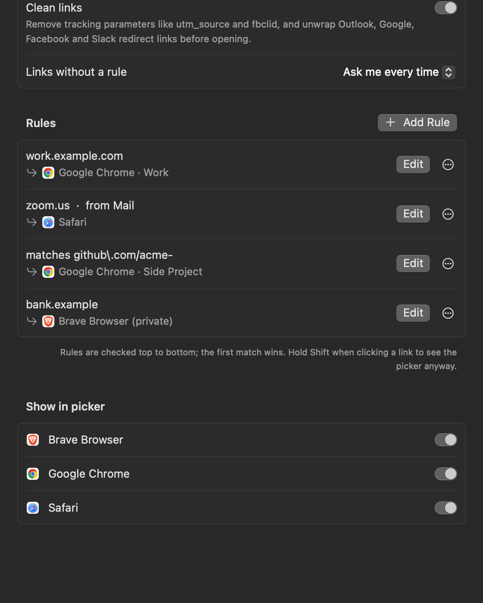
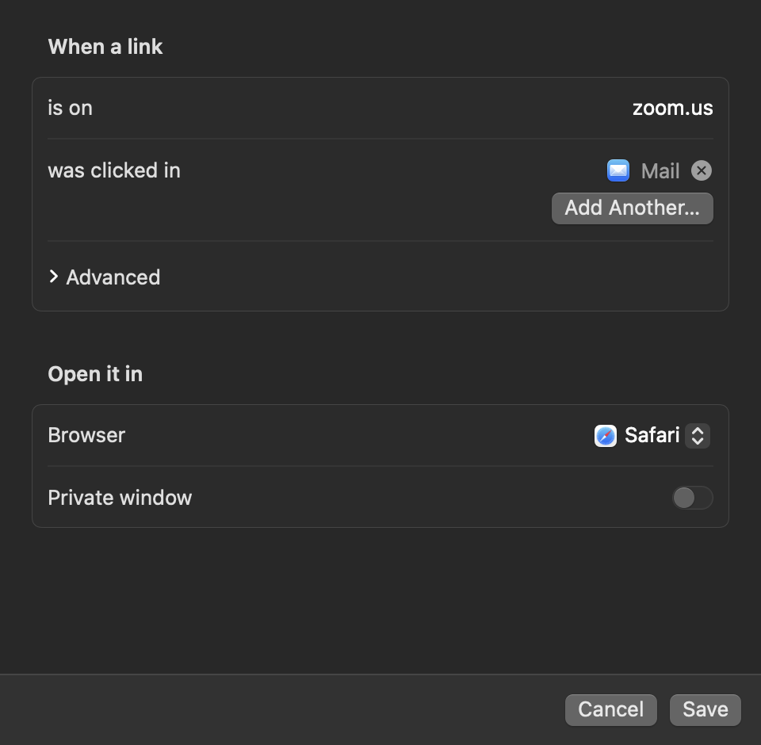

Set Switchboard as your default browser. Each link then opens in the right browser, profile or private window: by rule, or from a picker at your cursor.
Click a link in Slack, Mail or anywhere. Press 3 and it opens in Chrome · Work. Hold ⌘ and it always will.
one row per browser profilerules by site, URL or source appno network requests, no accountmacOS 14+
How it works
One click. The right window.
Switchboard sits between every app and every browser. It decides on its own, and asks you only when it should.
You click a link
In Slack, Mail, Notes, a terminal or any other app. macOS hands it to Switchboard, your default browser.
Rules decide
Work domains go to your work profile. Meeting links go to the browser you trust for calls. The first matching rule wins.
Or you pick
No rule? A small picker opens at your cursor. Press a number and the link opens. Hold ⌘ to turn that choice into a rule.
Features
Small app. Sharp edges sanded off.
Everything you need to stop copy-pasting links between browsers. Nothing you have to babysit.
Picker at the cursor
Opens right where you clicked. Press 1–9, Return for the first row, or Esc to cancel.
Every profile, one row each
Chrome, Brave, Edge, Vivaldi, Opera and Chromium profiles are read from disk and listed by their real names.
Rules that read like English
“When a link is on zoom.us and was clicked in Mail, open it in Safari.” Sites, source apps and URL patterns.
Remember with ⌘
Hold Command while picking and Switchboard saves a rule for that site. Most rules get made without opening Settings.
Private on demand
Hold ⌥ for an incognito or private window, or make a rule always open privately. Chromium and Firefox families.
Local and private
No account, no analytics, no network calls. Settings live in one JSON file you can read, back up or edit by hand.
Settings
No config files required.
A native Settings window covers everything: default-browser status, what happens to links without a rule, your rules, and which apps appear in the picker.

Settings. Reorder, edit or delete rules, and hide apps that aren't really browsers.

Rule editor. Paste a full URL and it trims to the domain. Advanced regex hides until you need it.
Keyboard
Built for fingers, not mice.
1 – 9
Open in that row
Return
Open in the first row
⌘ + choice
Open there, and always use it for this site
⌥ + choice
Open in a private window
⌘C
Copy the link instead
Esc
Cancel
Hold Shift when you click a link to get the picker even when a rule matches.
Install
Two minutes, start to finish.
Download the DMG from GitHub Releases and drag it into Applications, or build it yourself with Xcode 16+.
zsh: install
# 1 · download Switchboard.dmg from the latest release, open it, # and drag Switchboard into Applications
# 2 · not notarized yet, so clear the quarantine flag once $ xattr -dr com.apple.quarantine /Applications/Switchboard.app
# or build from source $ git clone https://github.com/justadityaraj/switchboard.git $ cd switchboard && ./scripts/build.sh --install
01
Open Switchboard. Settings appears on first launch.
02
Click Make Default and confirm the macOS prompt.
03
Click any link. Pick a browser, or hold ⌘ to remember it.
Who built this
Aditya Raj Singh
builder · Mac tools, automation & MCP servers
I run eight Chrome and Brave profiles across a handful of companies, and every link was a coin toss. So I built the router I wanted: a picker that knows my profiles, and rules I can make with one key. More of what I build at adityarajsingh.com.
Questions
Switchboard, answered.
What is Switchboard?
A free, open-source macOS menu-bar app that you set as your default browser. Every link you click goes through it, and it opens the link in the right browser, Chrome or Brave profile, or private window, from a rule or from a small picker at your cursor.
Can it open links in a specific Chrome or Brave profile?
Yes. Switchboard reads each Chromium browser's profile list and shows one picker row per profile, by its real name. It supports Chrome, Brave, Edge, Vivaldi, Opera and Chromium, and rules can target a profile directly.
How do rules work?
A rule matches on any mix of sites, the app the link was clicked in, and a URL pattern. It sends the link to a browser, profile or private window. Rules are checked top to bottom, and the first match wins. Manage them in Settings, or hold ⌘ while picking a browser to create one instantly.
Is it free? Does it collect any data?
It's free and MIT-licensed. There's no account and no analytics, and it makes no network requests. Your settings live in ~/Library/Application Support/Switchboard/config.json.
Why does macOS warn me when I open it?
The release is ad-hoc signed but not yet notarized by Apple. After moving it to /Applications, run xattr -dr com.apple.quarantine /Applications/Switchboard.app once, or build it from source with Xcode.
What do I need to run it?
macOS 14 Sonoma or later, on Apple Silicon or Intel. Building from source needs Xcode 16 or later.